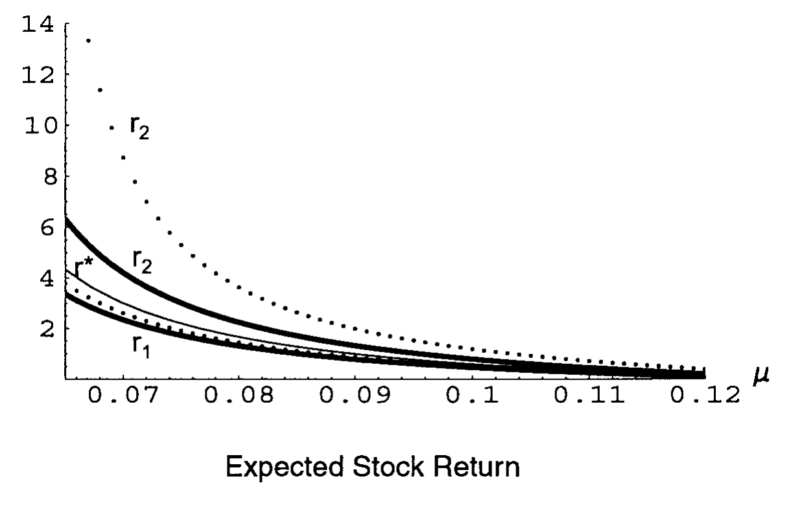
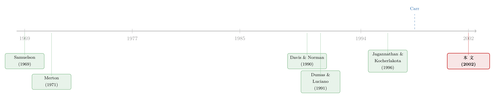

一点点交易成本，就把「持续交易」逼成了「买入持有」
本文读的是 Liu & Loewenstein (2002, Review of Financial Studies)：一个 CRRA 投资者，只要同时面对比例交易成本和有限的投资期限，他的最优策略就会自动变成「随年龄调整、且基本上买入持有」——而这恰恰是理财顾问挂在嘴边、却长期得不到模型支持的那套生命周期建议。更反直觉的是：即便股票的风险溢价为正，只要预期还能投资的时间不够长，最优选择竟可能是永远不买这只股票。
1 一条人人都信、却没人能证明的投资箴言
打开任何一本面向大众的理财书，你都会读到两条几乎是常识的建议：年轻人该多配股票，年纪越大越要减仓；以及所有人都该买入并长期持有。Malkiel 在《漫步华尔街》(A Random Walk Down Wall Street) 里把这条箴言说得再清楚不过——「你能持有投资的期限越长，普通股在你组合里就该占越大的份额……而且这些回报，是靠买入并持有你那只分散化组合的稳健策略赚来的。」
这话听上去天经地义。可一旦你把它交给资产定价的标准模型，麻烦就来了。
首先，这条建议显然是与期限挂钩 (horizon-dependent) 的——它明确告诉你，剩下的投资年限会改变你该持有多少股票。要复现它，模型至少得是有限期限的。这一步不难。但接着，一个让人尴尬的问题出现了：有限期限，并不足以推出「与期限挂钩」。
这正是 Samuelson (1969) 和 Merton (1971) 留下的那个著名结论：哪怕投资者的期限是有限的，在连续交易、无摩擦的世界里，他投在股票上的财富比例仍然与期限无关——今天该配 60%，到了临终前一天还是 60%。更糟的是，这个最优策略要求你连续不断地调仓，跟「买入持有」南辕北辙。
于是人们开始打补丁。引入时变投资机会 [Kim and Omberg (1996)、Brennan, Schwartz, and Lagnado (1997)、Liu (1999)]，确实能造出与期限挂钩的组合规则；引入劳动收入 [Bodie, Merton, and Samuelson (1992)、Campbell and Viceira (1999)]，也能解释年龄与股票占比的负相关。可这些模型有一个共同的软肋：它们都推不出买入持有。理论里的投资者，还是在不停地交易。
那「买入持有」到底从哪里来？
2 真正被忽略的那个摩擦
本文的出发点朴素得几乎像一句废话：真实市场里是有交易成本的。
Jagannathan and Kocherlakota (1996) 已经摸到了门口。他们指出：如果因为交易成本，投资者被限定只能采用买入持有策略，那么最优的组合选择就会变得「基本上与期限无关」。可问题在于，他们是把买入持有当成一个外生的约束强加进去的，并没有真正把投资者实际付出的交易成本算进模型——而一旦你认真去算这笔账，投资者究竟愿不愿意、何时愿意买入持有，本身就该取决于他打算把这个仓位握多久。
Liu 和 Loewenstein 的主张于是变得清晰：不要假设时变参数，不要假设劳动收入，也不要把买入持有当约束硬塞进去。只要把比例交易成本和有限期限这两样东西同时放进一个标准的 CRRA 组合选择问题里，与期限挂钩、且基本上买入持有的策略就会自己长出来。
他们的分析揭示了一连串结论：期限越长的投资者，倾向于持有越多股票——于是期限成了最优决策里一个核心的变量；哪怕只有很小的交易成本，投资者的行为也会发生戏剧性的转变——从连续交易，变成几乎完全的买入持有。一个具体的数字是：一位投资期限为 10 年的投资者，可能预期会把那个有交易成本的仓位握上 5 年。这就是「买入持有」最朴素的样子。
3 难在哪里：两条会随时间移动的自由边界
要解这个问题，先得看清它难在哪。
设有两种资产。第一种是「债券」，以连续复利率 \(r\) 增长的货币市场账户。第二种是「股票」，价格服从几何布朗运动：
$$S_t = S_0\, e^{(\mu - \sigma^2/2)t + \sigma w_t}, \qquad \mu > r$$
投资者买入股票要付卖价 \(S_t\)，卖出只能拿到买价 \((1-\theta)S_t\)，其中 \(0\le\theta<1\) 是比例交易成本率 (proportional transaction cost rate)。记 \(x_t\) 为投在债券上的金额、\(y_t\) 为投在股票上的金额，\(I_t\)、\(D_t\) 分别是累计买入与卖出的美元数，则有
$$dx_t = r x_t\,dt - dI_t + (1-\theta)\,dD_t$$ $$dy_t = \mu y_t\,dt + \sigma y_t\,dw_t + dI_t - dD_t$$
投资者有 CRRA 偏好 \(u(W)=W^{1-\gamma}/(1-\gamma)\)，\(\gamma>0,\gamma\ne1\)，要在一个确定的终点 \(T\) 最大化清算财富的期望效用，并始终满足偿付能力约束 \(x_t+(1-\theta)y_t\ge0\)。值函数是
$$V(x,y,t)=\sup_{(D,I)}\mathbb{E}\!\left[\frac{(x_T+(1-\theta)y_T)^{1-\gamma}}{1-\gamma}\,\Big|\,\mathcal{F}_t\right]$$
作为对照，先回忆无摩擦的 Merton 解（\(\theta=0\)）：最优策略是把财富的一个固定比例投在股票上，
$$y^*_t = \frac{1}{r^*+1}\big(x^*_t+y^*_t\big), \qquad r^* = \frac{\gamma\sigma^2}{\mu-r}-1$$
这里的 \(r^*\) 就是著名的「Merton 线」——它是债券金额与股票金额之比 \(z=x/y\) 的最优值。注意：只要 \(\mu>r\)，投资者就永远会持有一些股票，而且这个最优比例与期限无关。本文接下来要做的，正是看着这些性质在交易成本面前一个个崩塌。
然后，加入交易成本 \(\theta>0\)。 借助效用函数的齐次性，可以证明值函数对 \((x,y)\) 是 \(1-\gamma\) 次齐次的，于是偿付能力区域在每个时刻都裂成三块：买入区、不交易区、卖出区。用比值 \(z=x/y\) 来刻画，就是两条随时间变化的函数 \(r_1(t)\) 与 \(r_2(t)\)——当 \(z\ge r_2(t)\) 时买股票，\(z\le r_1(t)\) 时卖股票，中间 \(r_1(t) 问题就出在这「随时间变化」五个字上。 直接求解，意味着要解一个带两条自由边界 (free boundaries) 的偏微分方程，而这两条边界本身还会随时间漂移。这比美式看跌期权难得多——后者只有一条移动边界，本文却有两条。这条路几乎走不通。 真正巧妙的一步，借自 Carr (1998) 关于美式看跌期权的「随机化 (randomization)」思想。 先退一步，不去解那个确定期限 \(T\) 的问题，而是先解一个终点随机的问题。 假设投资者的清算时刻 \(\tau\) 是一个强度为 \(\lambda\) 的独立泊松过程的首次跳跃时间，于是 \(\tau\) 服从参数为 \(\lambda\) 的指数分布，\(P(\tau\in dt)=\lambda e^{-\lambda t}\,dt\)。它的平均期限是 \(1/\lambda\)，方差是 \(1/\lambda^2\)。这个设定本身就有独立的意义——退休、伤病、遗赠等许多人生大事，本来就发生在一个不确定的时点上。 奇妙的事情发生了。利用泊松到达的无记忆性，原本的期望效用问题可以被改写成下面这个没有时间维度的形式： 关键在于最后那一点：时间维度消失了。 原来要解一个二维（状态 + 时间）的 PDE，现在变成了一个一维的常微分方程问题，而那两条自由边界也从随时间漂移的函数 \(r_1(t),r_2(t)\)，退化成了两个固定的常数 \(r_1,r_2\)。难题被「降维」了。 具体地，在不交易区里，HJB 方程是 $$\frac{1}{2}\sigma^2 y^2 v_{yy} + r x v_x + \mu y v_y - \lambda v + \frac{\lambda\,(x+(1-\theta)y)^{1-\gamma}}{1-\gamma}=0$$ 再次利用齐次性 \(v(x,y)=y^{1-\gamma}\Phi(z)\)（\(z=x/y\)），它被化简成一个二阶常微分方程： $$z^2\Phi_{zz} + \eta_2\, z\Phi_z + \eta_1\Phi + \eta_0\frac{(z+1-\theta)^{1-\gamma}}{1-\gamma}=0$$ 其中 \(\eta_2 = 2(\gamma\sigma^2-(\mu-r))/\sigma^2\)，\(\eta_1=-2(\lambda+(1-\gamma)(\gamma\sigma^2/2-\mu))/\sigma^2\)，\(\eta_0=2\lambda/\sigma^2\)。它在两条边界上分别满足 $$(z+1)\,\Phi_z(z)=(1-\gamma)\Phi(z),\quad z\ge r_2;\qquad (z+1-\theta)\,\Phi_z(z)=(1-\gamma)\Phi(z),\quad z\le r_1$$ 齐次部分的两个基本解是 \(\Phi_1(z)=|z|^{n_1}\)、\(\Phi_2(z)=|z|^{n_2}\)，其中 $$n_{1,2}=\frac{(1-\eta_2)\pm\sqrt{(1-\eta_2)^2-4\eta_1}}{2}$$ 再配上一个特解，整个值函数就有了闭式 (closed-form) 表达。剩下的工作，不过是用 \(\Phi\) 在 \(r_1,r_2\) 处的 \(C^2\) 光滑（即「光滑粘合条件」）把若干积分常数和两条边界一起定出来。这一切之所以能成立，需要一个参数条件： 假设 1：\(\lambda > (1-\gamma)\big(r+\beta/\gamma\big)\)，其中 \(\beta=(\mu-r)^2/(2\sigma^2)\)。 直觉是：如果投资者预期能活很久（\(\lambda\) 很小），而股票又能在低风险下提供过高的风险溢价，那么他就能靠不停投资攒出无穷大的效用，问题本身失去意义。这个条件把这种「极乐」情形排除掉。 （把一个看似无解的动态组合问题，最终归结为一个常微分方程——这条「降维」的思路并不孤单，可参见《把投资组合的「天书」解到只剩一个常微分方程》。） 闭式解一旦到手，那些在无摩擦世界里牢不可破的性质，就开始一个个被推翻。 第一个反转：无交易区整块抬到了 Merton 线上方。 本文导出了边界的显式、且与期限无关的界——这是文献里第一次做到。结论是：买入边界处的比值 \(r_2\) 永远大于 Merton 线 \(r^*\)（也就是说，相比无摩擦时，你会更晚才肯买股票）。更微妙的是，卖出边界 \(r_1\) 也可能大于 \(r^*\)，这意味着整个不交易区都可能落在 Merton 线的上方——投资者对现金存在一种系统性的偏好。 这一点与 Dumas and Luciano (1991) 形成了耐人寻味的对照。后者考察的是期限趋于无穷的极限策略，发现最优组合里没有对现金的偏好；而本文证明，有限的期限恰恰能诱发这种偏向现金的偏好。 第二个反转，也是最反直觉的一个：投资者可能永远不买股票。 在无摩擦的 Merton 世界里，只要 \(\mu>r\)，你就一定会持有一些股票。但在本文中，即便风险溢价为正，只要预期期限足够短，最优选择就是永远不碰这只有交易成本的股票。本文还为这一情形给出了显式的充要条件。直觉很清楚：一个不指望自己能活到「超额收益足以盖过交易成本」那一天的投资者，理性的做法就是干脆不买。 第三个反转：从连续交易到买入持有，只隔着一点点成本。 哪怕 \(\theta\) 很小，投资者的行为也会突变——从 Merton 式的连续调仓，跳到几乎完全的买入持有。前面那个「10 年期限、预期持有 5 年」的例子，就是这种突变最直白的体现。这正是把理财顾问那句箴言，第一次从模型内部讲通了。 到这里，细心的读者会追问：这毕竟还是个随机期限的解，理财顾问说的「你还剩 30 年」可是个确定的数字啊。 这正是本文最后一块拼图。作者把指数分布的期限推广到爱尔朗分布 (Erlang distributed)——让终点发生在泊松过程的第 \(n\) 次跳跃。此时不交易区的两条边界不再是常数，而变得状态依赖，并在泊松过程每次跳跃时发生跳变；同时，前面导出的那些边界的界依然成立。 然后是收敛定理：当 \(n\to\infty\)（并相应地调整 \(\lambda\)）时，爱尔朗分布情形下的值函数与交易边界，分别收敛到确定有限期限投资者的值函数与交易边界。这意味着两件事：其一，前面在随机期限下导出的、与期限无关的边界的界，对确定期限的情形同样有效；其二，指数分布期限下那个漂亮的闭式解，可以被当作确定期限解的一个近似。 相比 Gennotte and Jung (1994)、Balduzzi and Lynch (1999) 用二叉树或离散逼近来数值求解，本文的近似方法对离散化的选择不那么敏感、逼近误差更小，而且能保留对最优解全局性质（比如那些显式的界）的洞察——这是纯数值方法给不了的。 最后，由于指数分布期限的边界既能近似爱尔朗、也能近似确定期限，作者就用它来细致刻画交易行为。比较静态大体沿袭无摩擦情形的方向，但有一个新发现：买入边界比卖出边界对参数变化更敏感，而且这种敏感性随着期限缩短而增强。下面这张图给出了买入与卖出边界随预期收益 \(\mu\) 变化的样子——可以看到买入边界这一侧明显更「陡」。  Figure 6: shows how the buy and sell boundaries change as the expected 把这条线索从头捋一遍，会看到一场围绕「期限」与「摩擦」的接力。 起点是 Samuelson (1969) 与 Merton (1971)：他们奠定了连续时间组合选择的范式，却也留下那个让人不甘的结论——有限期限下，最优股票比例与期限无关，且要求连续交易。 第二棒是交易成本下的奇异随机控制：Constantinides (1979, 1986)、Davis and Norman (1990)、Shreve and Soner (1994) 在无限期限、最大化中间消费效用的框架里，给出了「不交易楔形」这一经典结构；Dumas and Luciano (1991) 则研究了终点效用在期限趋于无穷时的极限策略。但只要期限是无限的，正风险溢价就意味着投资者总会持有股票。 第三棒转向有限期限：Davis, Panas, and Zariphopoulou (1993) 证明了确定有限期限问题解的存在唯一性并给出数值方案；Cvitanić and Karatzas (1996)、Loewenstein (2000) 研究了同一问题但未给出具体解；Gennotte and Jung (1994)、Balduzzi and Lynch (1999) 则用离散逼近来数值计算。与此并行的，是 Jagannathan and Kocherlakota (1996) 把买入持有当约束、从而得到「基本与期限无关」的组合这一关键的中间结论。  真正点石成金的，是 Carr (1998) 关于美式看跌期权随机化的方法论。Liu and Loewenstein (2002) 把它移植到组合选择里，用「随机终点」绕开了「两条移动自由边界」的死结，第一次在一个内生的模型里，让与期限挂钩和买入持有这两个性质同时涌现，并给出了交易边界的显式界。它站在的，正是「有限期限 × 交易成本」这个此前缺乏解析解的交叉口上。 （关于有限期限本身如何改写消费与投资的直觉，也可对照《想清楚一笔意外之财，是要花脑力的——有限规划期限下的消费之谜》；而生命周期视角下「年纪越大越减仓」的另一种解法，可参见《年纪越大，越该把钱从股票里挪出来吗？》。） Q：把确定的期限 \(T\) 换成随机的 \(\tau\)，不是偷换了问题吗？ 不是偷换，而是搭桥。单看指数分布的解，确实只对应「随机终点」这一独立有意义的情形（退休、伤病等）。但本文第 3、4 节证明了：用爱尔朗分布（第 \(n\) 次跳跃）逼近，当 \(n\to\infty\) 时值函数与边界收敛到确定期限的解。所以随机化只是求解手段，最终回答的仍是那个确定期限的问题。 Q：「投资者可能永远不买股票」会不会只是 \(\theta\) 取得过大的人为产物？ 不是。这个结论的关键不是 \(\theta\) 多大，而是期限多短。本文给出了「永不买入」的显式充要条件，其经济含义是：当预期期限太短、超额收益来不及覆盖交易成本时，不买才是理性的。哪怕风险溢价 \(\mu-r>0\)、\(\theta\) 很小，只要 \(1/\lambda\) 足够小，结论依然成立。 Q：这和 Dumas and Luciano (1991) 的无限期限解到底差在哪？ 差在对现金的偏好。Dumas–Luciano 的渐近（期限趋于无穷）分析里，最优组合不偏向现金；而本文的有限期限会诱发一种偏向现金的偏好——表现为卖出边界 \(r_1\) 也可能高于 Merton 线 \(r^*\)，整个不交易区被抬到 Merton 线上方。有限性本身改变了结论。 Q：为什么买入边界比卖出边界更敏感？这有现实含义吗？ 直觉上，买入是一项「为未来下注」的决策，它对预期收益、期限这些决定「未来值不值」的参数高度敏感；而卖出更多是对既有仓位的被动调整。本文发现买入边界的敏感性随期限缩短而增强——这意味着越接近终点，投资者「要不要再买」的决策越如履薄冰，这与生命周期里临近退休时配置趋于保守的现象是一致的。 Q：模型只有终端财富效用，没有中间消费，会不会限制了适用性？ 作者明确指出这是为了「聚焦期限对决策的影响」而做的简化，且大部分分析可以推广到带中间消费的情形。对一个为特定未来事件（退休、遗赠）而投资的个体来说，终端财富效用本就是恰当的目标函数。 Q：交易成本设成「比例」而非「固定」，影响大吗？ 影响结构。比例成本恰好与几何布朗运动、CRRA 偏好的齐次性兼容，才使得值函数能写成 \(y^{1-\gamma}\Phi(x/y)\)、问题降到一维。换成固定成本，齐次性被破坏，「楔形」结构和闭式解都会改变——那是另一类问题。 1. 把这套「随机终点」方法搬到公司债组合上。 【经济故事】公司债的交易成本远高于股票（买卖价差动辄几十个基点），且机构持有人常有明确的负债期限。本文「有限期限 × 高交易成本 ⇒ 强买入持有」的逻辑，在信用市场里应当更尖锐——它或许能从最优化角度解释为何债券基金的换手率系统性低于股票基金。
【可行性】中。理论端只需把单一风险资产换成带违约/评级迁移的信用资产并重设 \(\theta\)；实证端可用 TRACE 的逐笔成交估计真实交易成本、用基金持仓期限做验证，数据可得，识别难点在于把「主动买入持有」与「被动卖不掉」区分开。 2. 外资持有人的期限异质性如何映射到交易行为。 【经济故事】跨境投资者的有效期限（受汇率风险、赎回压力、资本管制影响）往往短于本地投资者。按本文逻辑，期限更短者会更偏向现金、更可能「永不买入」某些资产。这能为「外资在某些市场参与度低、且偏好流动性资产」提供一个不依赖信息劣势的解释。
【可行性】中。需要按投资者国别/类型构造期限代理变量，并在持仓层面检验「期限越短—越偏现金、越买入持有」。数据上可借助基金层面的国别持仓数据；难点是期限本身不可直接观测，需要可信的工具或代理。 3. 把「随时间漂移的边界」与流动性危机挂钩。 【经济故事】本文确定期限情形下，交易边界是随时间移动的。如果让交易成本 \(\theta\) 本身随市场状态（如流动性枯竭）跳变，边界会怎样移动？这能刻画危机中「明明该调仓却动不了」的瘫痪状态。
【可行性】中偏低。理论上需把 \(\theta\) 设为状态变量，自由边界问题维度上升，闭式解大概率消失，得依赖数值方法；好处是能与公司债流动性危机的实证（价差骤升、成交骤降）对话。 4. 用本文的「永不买入」充要条件做横截面检验。 【经济故事】本文给出了「即便溢价为正也永不买入」的显式条件，它把期限、波动率、溢价、交易成本拧成一个可计算的阈值。能否在真实投资者层面找到落在阈值两侧、行为截然不同的人群？
【可行性】高。条件是闭式的，只要能估出个体的有效期限与面临的 \(\theta\)，就能算出预测的「买/不买」分界，再与实际参与决策对照。这类似于把参与成本算成一笔最省的账（可对照《"不买股票"也能是理性的吗？》的思路）。 贡献。 这篇论文最漂亮的地方，不在某一个结论，而在那一步「降维」的方法论：用 Carr 的随机化把一个带两条移动自由边界的二维 PDE，化简成一维 ODE 的闭式解，再用爱尔朗逼近搭回确定期限。靠这一招，它第一次在一个内生模型里同时讲通了「与期限挂钩」和「买入持有」，并给出了交易边界的显式界——后者本身就是文献里此前没有的硬通货。「有限期限可诱发现金偏好」「短期限下可能永不买入」这两个反直觉结论，也都来得干净、可证。 对识别（这里是对模型刻画的妥当性）的担忧。 一是闭式解高度依赖三个特定假设——几何布朗运动、CRRA、比例交易成本——它们的齐次性是降维的全部前提；换成固定成本、随机波动率或其他偏好，这套漂亮的结构很可能整体失效，结论的稳健性还需更多检验。二是模型把交易成本 \(\theta\) 设为常数，而真实市场里成本恰恰在你最想交易时（危机中）飙升——这正是模型最想刻画的「买入持有」可能被现实进一步放大、也可能被扭曲的地方。三是无中间消费、无劳动收入的设定虽便于聚焦，但与真正的生命周期决策之间还隔着一段距离。 后续想看到什么。 我最想看到的，是把这套方法接到信用市场和外资持有人上：公司债的高交易成本与机构负债期限，应当让「买入持有」的逻辑更尖锐，也更可能被数据验证。其次，让 \(\theta\) 随状态跳变，看那两条边界如何在流动性危机里「卡住」——那会是连接这套优雅理论与真实市场瘫痪的一座桥。4 关键一步：把「确定的终点」换成「随机的终点」
5 反转：边界跑到了 Merton 线上方，股票可能压根不买
6 从「随机终点」回到「确定终点」：一个收敛的阶梯
7 文献脉络
8 评论与延伸（Q&A + 研究方向）
(a) 几个可能的疑问
(b) 几个可能的研究问题与提案
9 我的判断与参考文献
参考文献